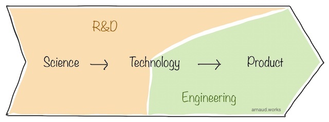

The role of engineers is to apply science to create products, and another name for applied science is technology.
Research and Development is the effort to transform science into technology and eventually evolve technology to their next generations (touching on products). The usual second steps towards a complete product is 'engineering' where the focus is on building products out of established technologies.

It is very possible to have a seamless path from science to product with very little friction and little to no handover between R&D and engineering. Actually, this really should be the goal you pursue as it will save a lot of money and energy.
It's not uncommon for R&D teams to not have proper product management, but there is value in looking at R&D from a product perspective to prepare for the next stage. It tightens the gap between science and product (time use optimized), focuses the R&D efforts in technologies that are directly convertible into products (scope control) and keeps the team engaged as it's most likely that the engineers working for a tech company (in contrast with a research lab) are the kind that want to ship to customers.
This is best achieved if a two-way street relationship exists between Product and R&D. Product has to be welcomed to look at the R&D efforts and suggests gaps: "It would be great for product X if we could Y". R&D has to demo what they are looking into to inspire and receive prioritization feedback from Product.
It's essentially the same conversation happening from two different starting points.
Because R&D is often secretive and strategic, it's normal if the product involvement comes from the executive level and this should not block this process from happening. It does require to hire executives of a certain caliber to participate in R&D conversation - as in, not a pure process expert in product management if R&D is important for your company/product.
Practically, at Robotics Inc, there is an imbalance in sensitivities and priorities.
When it comes to R&D, there is likely little to no work on native applications and web technologies. Quite the opposite actually, they are likely to stick to off-the-shelves and established technologies for these.
On the other hand, the hardware side is on top: battery systems, power systems, material science, manufacturing technics, sensors, onboard compute and designs, networking wired and wireless, etc. Right next to hardware is the whole world of control software. Top of this part will be control algorithms and patterns (autonomy) and AI as a whole.
This is simply the DNA of the company expressing itself. If you've missed this chapter, you'll find it in the Concepts & Principles.
At their stage, they have passed market validation and are selling practical solutions to customers. This means they focus on R&D work that can quickly become tangible (3-9 months), and hopefully next gen tech (1-3 years). The difference between practical R&D and artistic performance (see the Product Sweet Spot) lies in the choices that will be made while developing a given avenue.
You don't need to have everything ironed out yet, but you need to have at least eyes on a path towards the end user. Otherwise, it's only research and no development.
Normally, engineering and product leadership will set some of these constraints in the direction of the effort - which will also cover the secret last point:
Regardless, in such context, I would have the R&D team:
Keep a minimum of 40%-ish focusing on mid-long term goals that will guarantee we are ready if and when the competition surprises. This would be in the hardest part of the product such as on-board computing, manufacturing technics, sensors, radio system, autonomy and hand controls.
35%-ish focusing on short term R&D for expanding the current product line up. This would be mostly software augmentations through new architecture, new capabilities, new patterns, but all against production hardware. A small part will be inspiration-type self-hacking to stimulate the ecosystem into seeing how they could do more with the existing products.
25%-ish focusing on end-user experience. Investing in the app/web layer is critical to win. You can't afford to treat this as a secondary citizen. There are other industries that are killing it in their exploration of said experiences, and it's a great pool of idea to tap into.
At Trading Inc, the R&D is likely a minor part of the work. It is focused on solving precise problem because everything is (at least should be) measured. Number of execution per seconds, time to execute, cycle counts, latency between components, success rates, pnl, pnl per trade, slippage, etc; there is a precise target first.
That's because there is no external customer, little room for creativity and - even if it's not that easy to tie the effort to it - a very clearly defined measure of success: make more money.
It's very different from other customer-facing products where you have a force that pushed from the pool of capabilities that come out of institutional research. Instead, it's a strong pull from the end product side (the clear specs). This is an important dynamic to appreciate because the subtlety of the balance between roles changes.
The voice of Product becomes a lot louder in the 'R&D' stage.
Practically, the most senior engineers are the only one working on testing new systems as the trading stack is very complex and very sensitive. They are looking at all sorts of different kind of optimisation problems from OS configuration to programing/compiling technics that can squeeze more cycles, run on lower resources or any other performance metric that has been directly connected to revenue.
A large chunk of effort is on new technologies vetting as it is critical since a new framework/lib introduction can wreck the performance of the mega product they ultimately work on. Less research in the end, more fine testing and depth in exploration of complex optimizations on established technologies.
Sometimes a new principle or paradigm will be discovered/developed but the secrecy of this industry means probably no patents.
In this context, I would split the R&D effort into three equal buckets:
Pure performance. Look into how to run more of the code in less resources. This can take the quantitative avenue of performance measurements of comparable stacks or the endless rabbit-hole of optimizations.
Simulation and testing. Back testing on historical data, front testing in parallel simulation - if the context makes sense - and every possible modeling approach including genetic algorithm-inspired self tuning.
Future prediction. Seconds or minutes in the future would be huge. Anything that can give us an edge. I don't want to get too deep in the details because I've been working on something on this topic.
Crypto Inc is a challenger at a small size. In this context, R&D is close to the end-product, limited but still crucial.
Iterations are fast, decisions are bold because it's important to differentiate ourselves from the rest of the market, and we are lean and mean, so we can handle fast changes better.
Research here goes deeper into core technologies like blockchain - if having a custom one benefits the business -, and in everything going through the user. For instance, this can go into user experience, customer experiences, user interfaces, latest and greatest app and web technologies, and security paradigms.
These are more visual in nature, but they are still R&D. The reason why it matters to see it this way, is because it is quite common for UX - as a broad topic - to be only handled between product and designers. This, unfortunately, completely misses out the implementation reality engineers will face. So, approaching it from an R&D perspective gives you a dramatic edge in execution.
Similarly to this, when Square launched with the mag stripe reader working out of the microphone jack in, this R&D work allowed them to create a UX that opened the door for anyone to take credit card payments.
In this company, I would get the R&D effort structured this way:
40%-ish working on the experience of the user. Blockchain and crypto will only get to mass adoption if the complexity completely disappears behind the benefits.
40%-ish on the blockchain tech itself. All the usual suspect on the operational side of things: speed, security, reliability (I'm putting consensus here).
20%-ish on the tokenomics. I tend to treat crypto token as a representation of value without ever considering them as securities. This opens a lot of ways to make this value liquid and movable but this needs to be defined from a product standpoint and thoroughly explored in R&D.